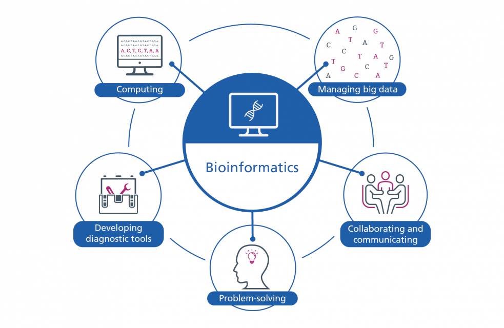

Variant Calling, ,Genome Assembly, Structural Viariation Analaysis
DACE
Data Analysis and Center for Education
Biostatistics / Statistics


Empowering Innovation in Life Sciences
Unlocking the secrets of life's code: Welcome to DACE, where cutting-edge bioinformatics analysis meets the world of biology and healthcare. Innovation is fueled by data, and we're the architects of innovation. Discover how we're transforming data into scientific breakthroughs.We provide the following analysis with few example analyses.
Differential Gene Expression, Alternative Splicing Analysis, Gene Co-expression Networks
Protein Identification Using ML Tools, Post-translational Modification Analysis, Protein-Protein Interaction Prediction
Taxonomic Classification of Microbial Communities, Functional Annotation of Metagenomic Data, Comparative Metagenomics
Pathway Enrichment Analysis, Network-based Pathway Analysis, Signaling Pathway Identification
Protein Structure Prediction, Molecular Docking Studies, Protein-Ligand Binding Analysis
Phylogenetic Tree Construction, Molecular Clock Analysis, Comparative Genomics
Modeling Biological Networks, Dynamic Simulation of Biological Systems, Flux Balance Analysis for Metabolic Pathways
Virtual Screening of Compounds, Ligand-Protein Interaction Prediction, ADMET (Absorption, Distribution, Metabolism, Excretion, and Toxicity) Prediction
Genomic Profiling for Disease Risk Assessment, Pharmacogenomics Analysis for Drug Response Prediction, Patient-Specific Treatment Recommendations
Creation of Interactive Data Visualization Tools, Development of Bioinformatics Software and Databases, User-Friendly Interfaces for Data Analysis
Binary Classification, Regression, Multi-Class Classification, Multi-Label-Multi-Class Classification
Cox-Proportion Hazard Model, KM Plots, High-Low Risk Group Estimation